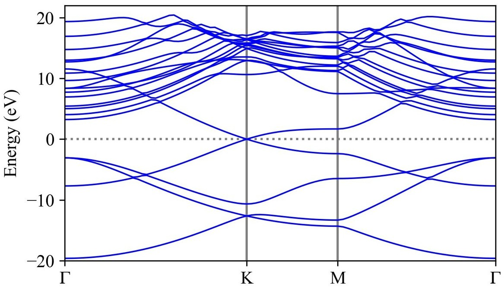
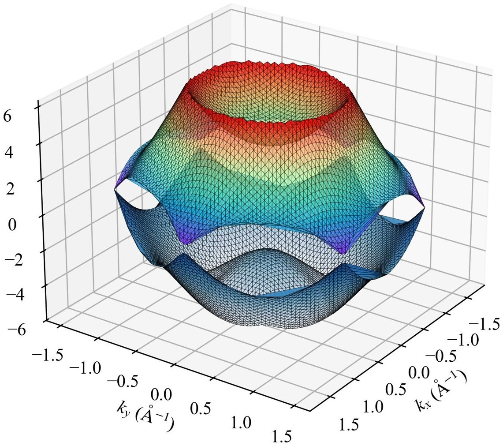
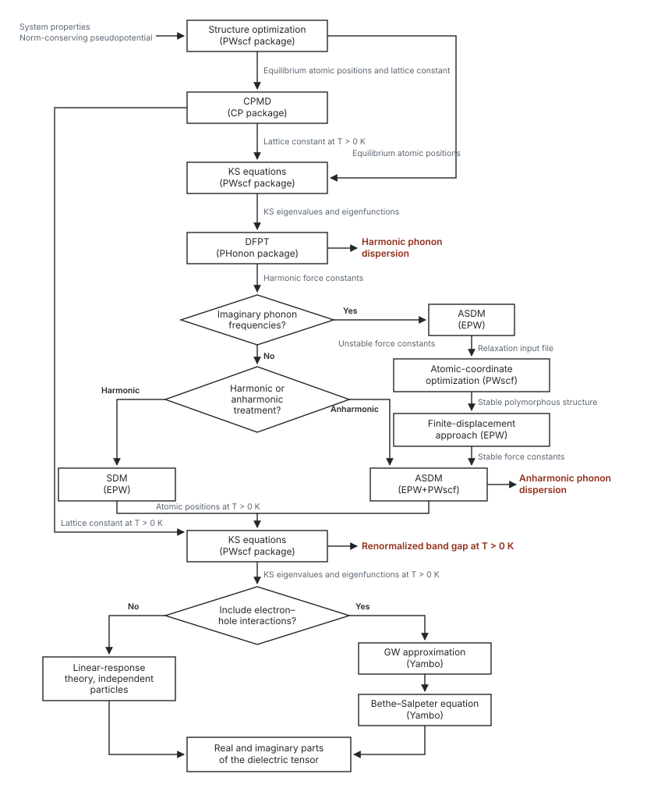

Ph.D. research
Methods & tools: NEGF, DFT, ASDM, Quantum ESPRESSO, Yambo, HPC
Problem
Most first-principles studies of extreme near-field radiative heat transfer use dielectric properties calculated at 0 K or, at most, room temperature, even when the materials operate at much higher temperatures. This misses the effects of phonon excitation, anharmonicity, and temperature-induced changes in the electronic structure on the dielectric response.
What I did
I calculated the frequency- and wavevector-dependent dielectric function at the actual material temperature using first-principles methods, including phonon excitations, all-order phonon scattering, and anharmonic effects. I then used these properties in a microscopic nonequilibrium Green’s function (NEGF) model for radiative heat transfer across atomic-scale gaps, where continuum approaches can become questionable.
Result
Using ground-state dielectric properties underpredicts the radiative conductance by 32–43% at 1200 K. Neglecting phonon anharmonicity underpredicts the conductance by up to 25.6% at 750 K. These results show that temperature-dependent material properties are essential for accurate heat-transfer predictions in the extreme near-field regime.




Methods & tools: DFT, DFPT, SDM/ASDM, Quantum ESPRESSO, EPW, Yambo, HPC
Problem
Dielectric properties are commonly calculated for the equilibrium crystal structure, although the material itself changes with temperature. Thermal lattice vibrations modify the atomic positions, phonons, electronic structure, and ultimately the dielectric response. Experimental data are also not available for every material and operating temperature.
What I did
I developed a first-principles workflow to calculate the frequency-, wavevector-, and temperature-dependent dielectric response. The workflow generates temperature-dependent atomic configurations using harmonic or anharmonic phonons, recalculates the electronic structure at the target temperature, and then evaluates the dielectric tensor. I applied the same framework to graphene, silicon, and gold.
Result
The calculations show that lattice vibrations can change the dielectric response substantially, even near room temperature. For silicon, the 300 K calculation reproduces the experimental absorption onset near 1.1 eV, while the equilibrium structure misses the low-energy phonon-assisted absorption. For graphene, the dielectric response changes strongly with temperature, and the anharmonic contribution becomes increasingly important at higher temperatures.



Methods & tools: Atomistic Green's function (AGF), Tersoff and Lennard-Jones potentials, MATLAB, HPC
Problem
Phonon transport across extremely small vacuum gaps had been studied for bulk dielectric, semiconductor, and metallic materials, but not for two-dimensional materials. Understanding this transport is important for predicting thermal resistance created by nanoscale gaps, cracks, and voids in 2D materials.
What I did
I modeled phonon heat transfer between graphene and silicene nanoribbons separated by sub-nanometer vacuum gaps using the atomistic Green's function method. Interactions within the nanoribbons were described with the Tersoff potential and interactions across the gap with the Lennard-Jones potential. I also verified the AGF implementation against three independent results from the literature before applying it to the 2D systems.
Result
A gap of only 0.2 Å reduces the phonon conductance by more than one order of magnitude. For graphene, the conductance follows three exponential decay regimes as the dominant interaction changes from repulsive forces, to combined repulsive and attractive forces, and finally to van der Waals attraction. Silicene conductance decreases more slowly and exceeds graphene beyond a gap of about 0.8 Å.